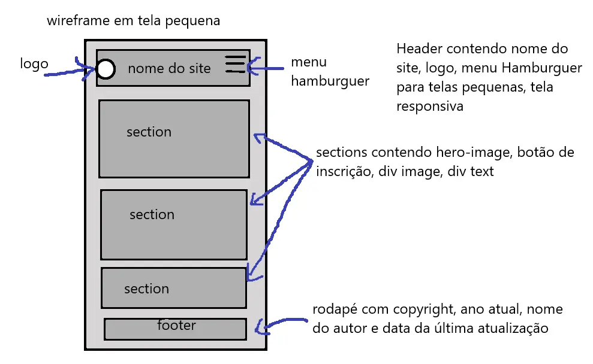
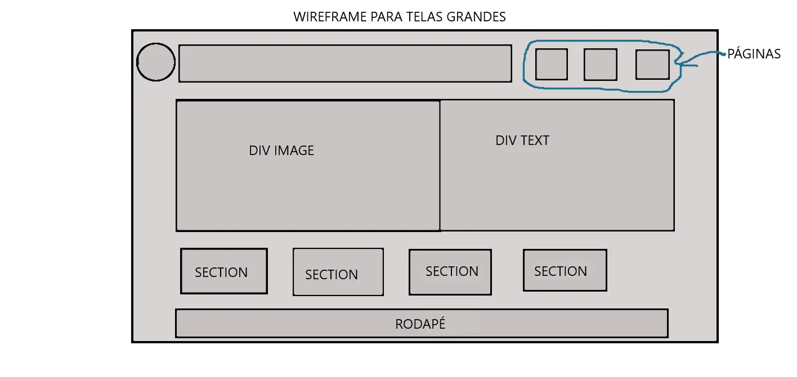

O main terá pelo menos 3 sections: Uma section com uma image-hero ligada à reciclagem
Uma section hero com uma div imagem e uma div texto chamada para o usuário se inscrever com um botão de inscrição e resposta automática
Uma section com informações sobre o tempo
nesta section terá o wireframe em tela menor

nesta section terá o wireframe em tela maior

paleta de cores determinando quais cores utilizadas e com nomes descritivos
--color-bg: #f8f9fa; /* Fundo principal (branco suave) */
--color-surface: #ffffff; /* Superfícies/Cards */
--color-border: #e9ecef; /* Bordas finas e divisores */
/* Tipografia */
--color-text-primary: #212529; /* Texto principal (grafite escuro) */
--color-text-secondary: #6c757d;/* Texto secundário / subtítulos */
--color-accent: #2563eb; /* Cor de contraste (links, botões) */
--color-accent-hover: #1d4ed8; /* Estado hover do acento */
Formulário para inscrição e cadastro com botão de envio e resposta automática de agradecimento
O Footer terá o simbolo de copyright ,ano atual ,nome do aluno , data da última atualização.